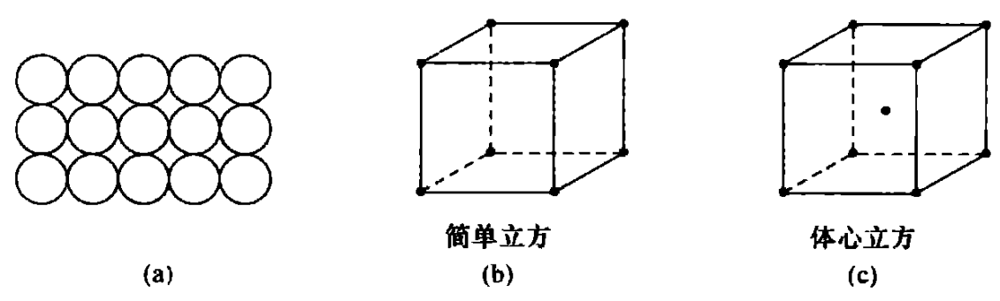
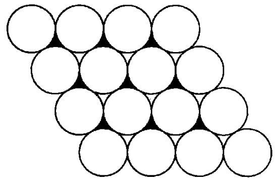
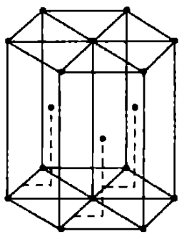
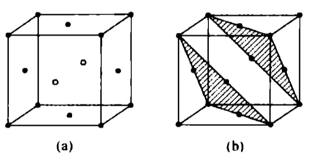
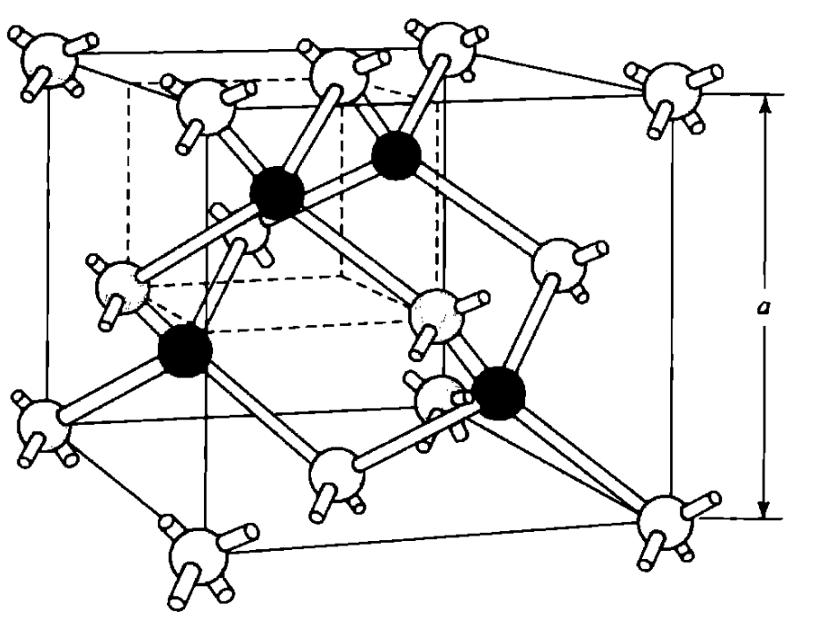
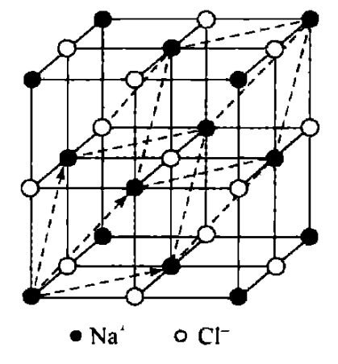

晶体中原子的规则排列.
晶格实际是一种空间结构
图(a)表示，在一个平面内，规则排列原子球的一个最简单的形式.
若将这样的原子层叠起来，各层的球完全对应，就形成所谓简单立方晶格.
[注]没有实际的晶体采取简单立方晶格，但一些更复杂的晶格可以在简单立方晶格的基础上加以分析.
简单立方晶格的原子球心显然形成一个三维的立方格子结构，往往用图(b)的形式表示这种晶格结构，其表示出这个格子的一个典型单元，整个格子可以看作这样一个单元沿三个方向的重复排列.
体心立方晶格按照同样的理解，图(c)表示所谓体心立方晶格，有相当多的金属，如Li、Na、K、Rb、Cs、Fe等元素，具有体心立方晶格.

如图所示为原子球在一个平面内最紧密排列的方式，常称为密排列.

将密排面叠起来，可以形成原子球最紧密堆叠的晶格.
为了堆叠最紧密，在堆积时应当把一层的球心对准另一层的球隙.
仔细分析可以发现，这样实际上可以形成两种不同的最紧密晶格排列.
首先我们注意到，密排原子层的间隙可以分成两套，如上图所示将它们涂成黑色与白色.
若称原来的密排层为A，另一排密排层可对准其中任一套间隙，分别称之为B和C.
两种密排的晶格可以表示为：
$$ABABAB\cdots$$ $$ABCABCABC\cdots$$这个演示过程看PPT-Physics中的第一面.
第二层都是一样的，重点在于第三层是继续错开还是与第一层重合.
前者称为六角密排晶格，常用下图所示的六角单元表示这种结构：

后者称为立方密排（或面心立方晶格），常用下图(a)表示这种晶格的典型单元：

其与简单立方相似，但在每个立方面中心有一个原子，图(b)表示面心立方晶格的原子密排面.
很多金属具有两种密排结构之一，如：
由碳原子形成的金刚石晶格是另一个重要的基本晶格结构.
其典型单元常用下图表示：

由面心立方的单元中心到顶角引8条对角线，在其中4条的中点上各加一原子，就得到金刚石的结构.
这个结构的一个重要特点是：每个原子有4个最近邻，它们正好在一个正四面体的顶角位置.
除金刚石外，重要的半导体硅和锗也具有这种晶格结构.
NaCl结构以上所介绍的都是同一种原子组成的元素晶体，下面介绍几种化合物晶体的结构.
最熟知的是岩盐NaCl结构，它好像是一个简单立方晶格，但每一行上相间地排列着正的和负的离子Na+和Cl-，如图所示：

碱金属Li、Na、K、Rb和卤族元素F、Cl、Br、I的化合物都具有NaCl结构.
所有晶格的共同特点是具有周期性，它们都可以看作是由一个平行六面体的单元沿三个边的方向重复排列而成.
以上各图用一个典型单元来表示各种结构边体现了晶格的这一基本特点.
一个晶格最小的周期单元.
原胞的三个棱可选为描述晶格的基本矢量，用\(\boldsymbol{a}_1,~\boldsymbol{a}_2,~\boldsymbol{a}_3\)表示.
简单立方晶格的立方单元也就是最小的周期单元——原胞，它的基矢沿三个立方边，长度相等.
体心立方和面心立方的立方单元，都不是最小的周期单元.